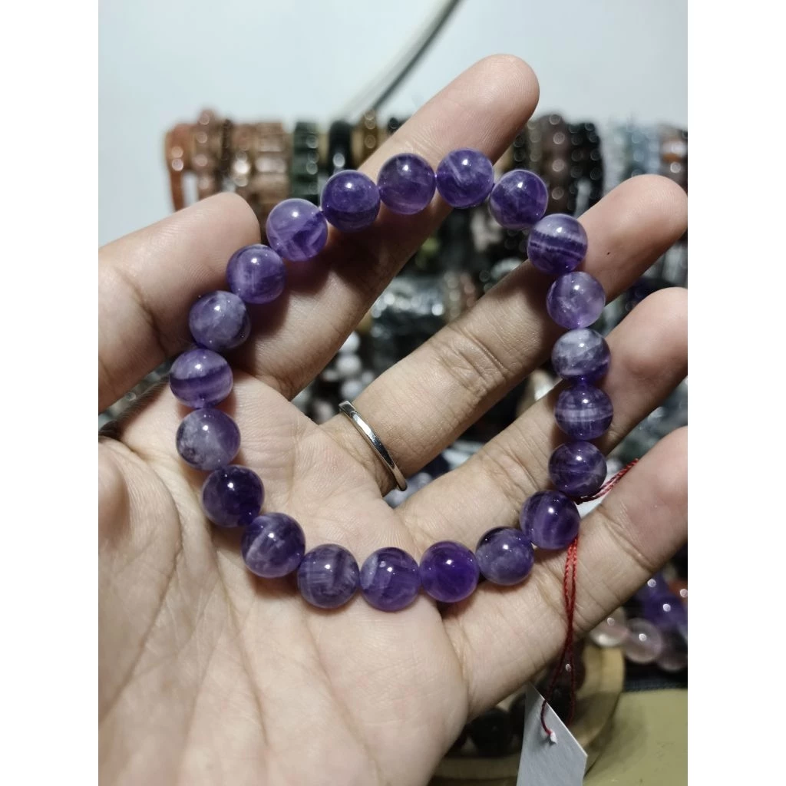
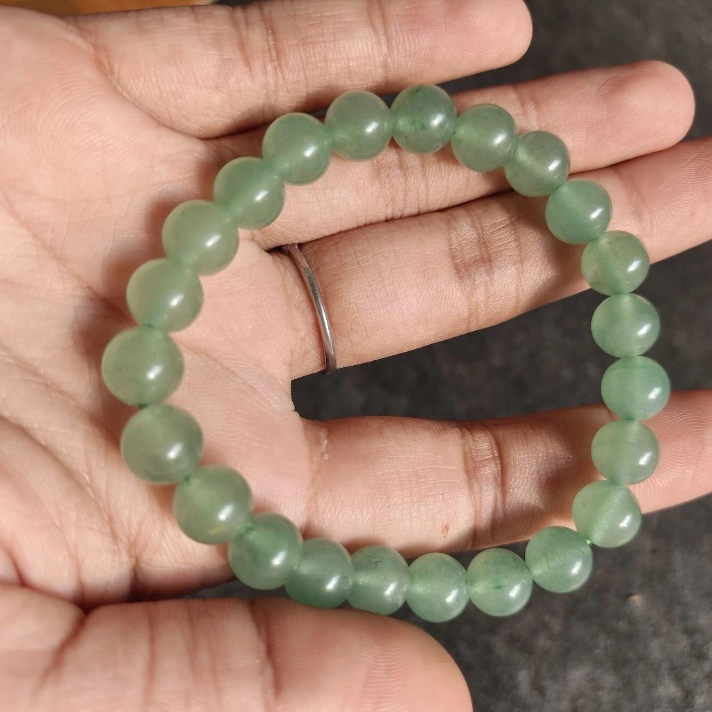
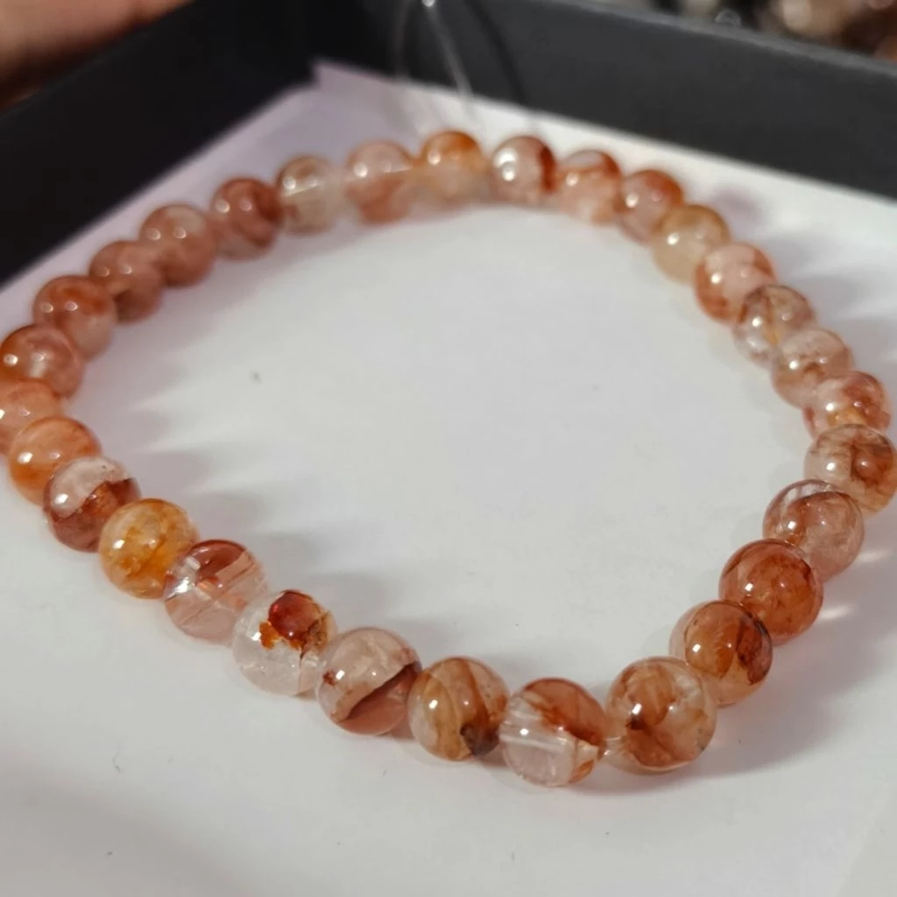
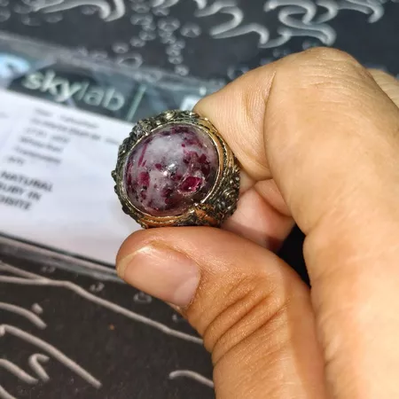
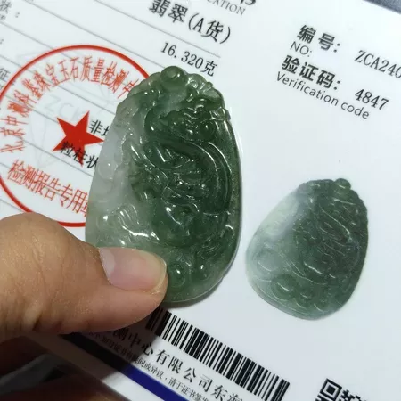

Gelang Amethyst
Ukuran 8 cm, asal Cina
Rp 150.000
TerjualBatu koleksi: kristal, gelang, dan cincin

Ukuran 8 cm, asal Cina
Rp 150.000
Terjual
Ukuran 8 cm, asal Brasil
Rp 350.000
Pesan via WhatsApp
Ukuran 8 cm, asal Brasil
Rp 250.000
Pesan via WhatsApp
Ukuran 8 cm, asal Brasil
Rp 350.000
Pesan via WhatsApp
Ukuran 9 cm, asal Cina
Rp 220.000
Pesan via WhatsAppCara 1: pakai benang atau kertas
Cara 2: pakai cincin yang sudah ada
Ukur diameter dalam cincin favoritmu (lubang bagian dalam) dengan penggaris, lalu cocokkan dengan tabel.
| Lingkar jari (mm) | Diameter dalam (mm) | Ukuran US |
|---|---|---|
| 49 | 15,6 | 5 |
| 52 | 16,5 | 6 |
| 54 | 17,3 | 7 |
| 57 | 18,2 | 8 |
| 59 | 19,0 | 9 |
| 62 | 19,8 | 10 |
Angka di atas perkiraan. Kalau ragu di antara dua ukuran, pilih yang lebih besar, atau chat kami untuk dibantu.
| Lingkar pergelangan (cm) | Ukuran gelang disarankan (cm) |
|---|---|
| 13 - 14 | 15 - 16 |
| 14 - 15 | 16 - 17 |
| 15 - 16 | 17 - 18 |
| 16 - 17 | 18 - 19 |
| 17 - 18 | 19 - 20 |
Untuk gelang batu (beads), ukuran bisa beda 0,5 cm karena bentuk dan ukuran manik.